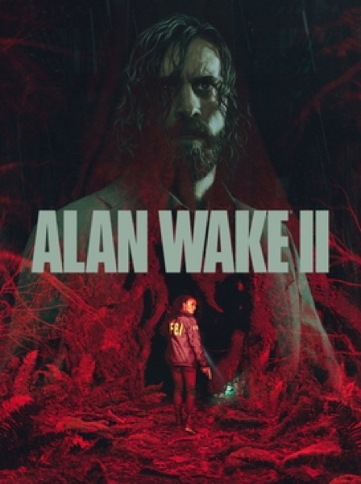

Horror · 2023
Alan Wake 2
Live action, song numbers and two detectives editing reality.

Cover: Wikipedia: Alan Wake 2
Facts
- Released
- 2023-10-27
- Genre
- Horror
- Category
- Horror
- Platforms
- PC, PlayStation, Xbox
- Developers
- Remedy Entertainment
- Publishers
- Epic Games